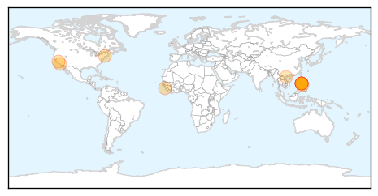

Influenza
30-Day Web Trend
0 alerts, 0 warnings

30-Day Twitter Trend
Article Locations

Article Confidences
Top Articles:
- 0.998
- Number of flu season deaths rises to eight
- 0.995
- CDC begging young and middle-aged people to get flu shots as death toll rises
- 0.993
- Doctors Urge Southland Residents To Get Flu Vaccines As Death Toll Rises « CBS Los Angeles
- 0.967
- WHO provides update on human cases of avian influenza in China
- 0.965
- Pregnant Woman Dies of Flu-Related Illness in LA County
- 0.924
- Winter Flu Jab helps Lessen Risk of Stroke
- 0.834
- India General News: India Joins U.S.-Led Initiative To Boost Health Security
- 0.792
- News at Nine, February 21
- 0.525
- West Virginians: We don't drink the water
Top Tweets:
-
No tweets found for Feb 21, 2014
Measles
30-Day Web Trend
1 alerts, 0 warnings

30-Day Twitter Trend
0 alerts, 0 warnings

Article Locations
Article Confidences

Top Articles:
- 0.993
- Health department probes measles case in Pittsburgh
- 0.991
- Why Some Rich, Educated Parents Avoid Vaccinations
- 0.991
- As California's flu season fades, new threat emerges: measles
- 0.990
- Measles on the rise, flu deaths continue in California
- 0.989
- Amid Measles Spike, Health Officials Say 2014 Off to Bad Start
- 0.972
- More measles cases in California — that’s what vaccines are for
- 0.970
- Measles, Flu Spike Concerns State, Local Health Officials
- 0.966
- Measles cases increase in California
- 0.957
- UNICEF organizes measles vaccination campaign in Guinea
- 0.936
- Measles cases surge in California
- 0.936
- Vaccinations urged as measles rise in California
- 0.860
- Vietnam to import nearly 80,000 doses of chickenpox vaccine
Top Tweets:
-
No tweets found for Feb 21, 2014